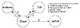

| Previous | Table of Contents | Next |
The Kerberos Model
The basic Kerberos protocol was outlined in Section 3.3. In the Kerberos model, there are entities—clients and servers—sitting on the network. Clients can be users, but can also be independent software programs that need to do things: download files, send messages, access databases, access printers, obtain administrative privileges, whatever.
Kerberos keeps a database of clients and their secret keys. For a human user, the secret key is an encrypted password. Network services requiring authentication, as well as clients who wish to use these services, register their secret key with Kerberos.
Because Kerberos knows everyone’s secret key, it can create messages that convince one entity of another entity’s identity. Kerberos also creates session keys which are given to a client and a server (or to two clients) and no one else. A session key is used to encrypt messages between the two parties, after which it is destroyed.
Kerberos uses DES for encryption. Kerberos Version 4 provided a nonstandard mode for authentication. This mode is weak: It fails to detect certain changes to the ciphertext (see Section 9.10). Kerberos Version 5 uses CBC mode.

Figure 24.1 Kerberos authentication steps.
How Kerberos Works
This section discusses Kerberos Version 5. I will outline the differences between Version 4 and Version 5 further on. The Kerberos protocol is straightforward (see Figure 24.1). A client requests a ticket for a Ticket-Granting Service (TGS) from Kerberos. This ticket is sent to the client, encrypted in the client’s secret key. To use a particular server, the client requests a ticket for that server from the TGS. Assuming everything is in order, the TGS sends the ticket back to the client. The client then presents this ticket to the server along with an authenticator. Again, if there’s nothing wrong with the client’s credentials, the server lets the client have access to the service.
| Table 24.1 Kerberos Table of Abbreviations | |
|---|---|
| c | = client |
| s | = server |
| a | = client’s network address |
| v | = beginning and ending validity time for a ticket |
| t | = timestamp |
| Kx | = x‘s secret key |
| Kx, y | = session key for x and y |
| {m}Kx | = m encrypted in x‘s secret key |
| Tx, y | = x‘s ticket to use y |
| Ax, y | = authenticator from x to y |
Credentials
Kerberos uses two types of credentials: tickets and authenticators. (The rest of this section uses the notation used in Kerberos documents—see Table 24.1.) A ticket is used to pass securely to the server the identity of the client for whom the ticket was issued. It also contains information that the server can use to ensure that the client using the ticket is the same client to whom the ticket was issued. An authenticator is an additional credential, presented with the ticket.
A Kerberos ticket takes this form:
A ticket is good for a single server and a single client. It contains the client’s name and network address, the server’s name, a timestamp, and a session key. This information is encrypted with the server’s secret key. Once the client gets this ticket, she can use it multiple times to access the server—until the ticket expires. The client cannot decrypt the ticket (she does not know the server’s secret key), but she can present it to the server in its encrypted form. No one listening on the network can read or modify the ticket as it passes through the network.
A Kerberos authenticator takes this form:
The client generates it every time she wishes to use a service on the server. The authenticator contains the client’s name, a timestamp, and an optional additional session key, all encrypted with the session key shared between the client and the server. Unlike a ticket, it can only be used once. However, since the client can generate authenticators as needed (it knows the shared secret key), this is not a problem.
The authenticator serves two purposes. First, it contains some plaintext encrypted in the session key. This proves that it also knows the key. Just as important, the sealed plaintext includes the timestamp. An eavesdropper who records both the ticket and the authenticator can’t replay them two days later.
Kerberos Version 5 Messages
Kerberos Version 5 has five messages (see Figure 24.1):
| 1. Client to Kerberos: | c, tgs | |
| 2. Kerberos to client: | {Kc, tgs}Kc, {Tc, tgs}Ktgs | |
| 3. Client to TGS: | {Ac, s}Kc, tgs, {Tc, tgs}Ktgs | |
| 4. TGS to client: | {Kc, s}Kc, tgs, {Tc, s}Ks | |
| 5. Client to server: | {Ac, s}Kc, s, {Tc, s}Ks | |
These will now be discussed in detail.
Getting an Initial Ticket
The client has one piece of information that proves her identity: her password. Obviously we don’t want her to send this password over the network. The Kerberos protocol minimizes the chance that this password will be compromised, while at the same time not allowing a user to properly authenticate herself unless she knows the password.
The client sends a message containing her name and the name of her TGS server to the Kerberos authentication server. (There can be many TGS servers.) In reality, the user probably just enters her name into the system and the login program sends the request.
The Kerberos authentication server looks up the client in his database. If the client is in the database, Kerberos generates a session key to be used between her and the TGS. This is called a Ticket Granting Ticket (TGT). Kerberos encrypts that session key with the client’s secret key. Then it creates a TGT for the client to authenticate herself to the TGS, and encrypts that in the TGS’s secret key. The authentication server sends both of these encrypted messages back to the client.
The client now decrypts the first message and retrieves the session key. The secret key is a one-way hash of her password, so a legitimate user will have no trouble doing this. If the user were an imposter, he would not know the correct password and therefore could not decrypt the response from the Kerberos authentication server. Access would be denied and he wouldn’t be able to get the ticket or the session key.
The client saves the TGT and session key and erases the password and the one-way hash. This information is erased to reduce the chance of compromise. If an adversary manages to copy the client’s memory, he will only get the TGT and the session key. These are valuable pieces of information, but only during the lifetime of the TGT. After the TGT expires, they will be worthless.
The client can now prove her identity to the TGS for the lifetime of the TGT.
| Previous | Table of Contents | Next |
){kind=link}
){kind=link}